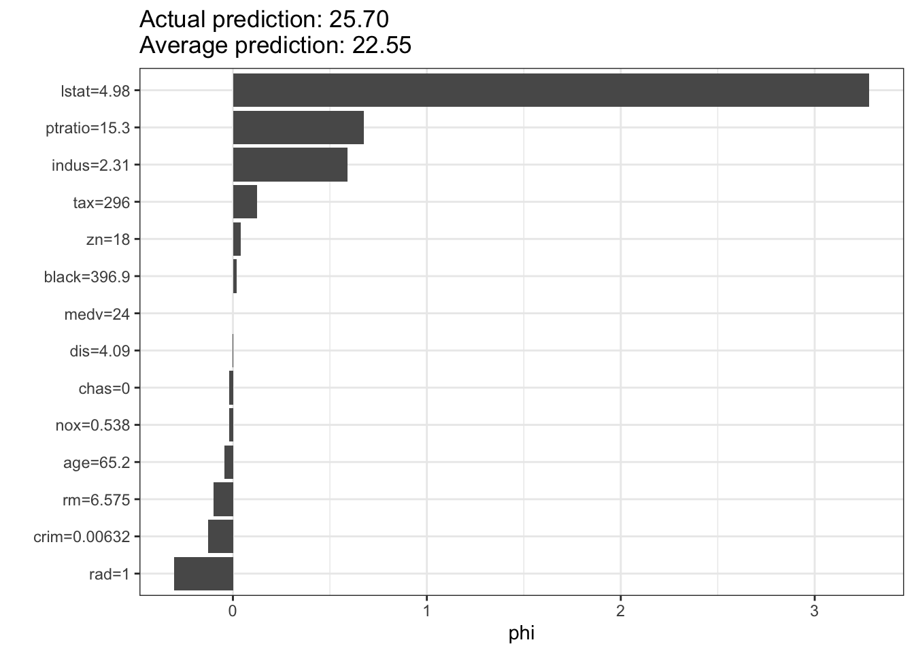

# Load necessary libraries
library(randomForest)
library(iml) # interpretable machine learning
library(MASS)
# Load the Boston dataset
data("Boston")
# Train a random forest model to predict median house value (medv)
set.seed(123) # For reproducibility
rf_model <- randomForest(medv ~ ., data = Boston, ntree = 100)12 Machine learning explainability
Last updated: 13 Nov, 2024 10:50 AM EST
In the previous chapter we looked at machine learning models that can be used for survival data, from the point of view of predictions. This is of course useful, but in BDS we’re often more interested in understanding why something happens and use models to help understand that. In other words, we are more interested in explanability and causality when it comes to modeling. This interest is based on the needs for interventions to change responses (think treatments).
Parametric models, generally, are explainable insofar as each parameter we have in the model has a particular interpretation in terms of the conditional change in the repsonse if we change the corresponding predictor by 1 unit while keeping others constant. With the proper study design, that interpretation can be causal as well, rather than merely associative.
But what about “black-box” models? How can we make them more interpretable in terms of various inputs we might collect?
We will look at a few things here. First are ways to estimate explainable or attributable aspects from ML models via algorithms like LIME and Shapley values. Second is using causal g-computations to derive effects of features based on predictive models.
Attributing risk: an old problem
There is, in epidemiology, a concept called attributable risk, which is the portion of the disease risk or rate attributable to an exposure. In a randomized study, it can be measured as the difference in risk between the exposed and unexposed individuals (or, in other words, the causal effect). In observational studies, it is usually called the population attributable risk (PAR) and is defined to be difference in the overall incidence rate of the diesease and the incident rate among those who are unexposed, and can be interpreted as the reduction in risk if the exposure was removed from the population. This can be computed as
\[ AF = \frac{P(RR-1)}{P(RR-1)+1} \]
where \(P\) is the probability of exposure in the population, and \(RR\) is the relative risk. This can be interpreted as based on context1:
1 Benichou, J (2001). Stat Methods Med Res 10(3): 195-216
- Cross-sectional study
- The AF represents the excess of prevalent cases of disease that can be attributed to an exposure
- Cohort study
- The AF represents how many excess cases of a disease we’d see that can be attributed to the exposure
Explainable machine learning
Resources
Explainable Machine Learning (XAI) refers to techniques and methods used to make the outputs of machine learning models understandable to humans. As machine learning models become increasingly complex, especially with the rise of deep learning and ensemble methods, the need for transparency and interpretability has grown. Traditional models like linear regression and decision trees are relatively easy to interpret, but more sophisticated models, such as neural networks and gradient boosting machines, are often seen as “black boxes” due to their intricate architectures and high dimensionality.
The primary goal of XAI is to bridge the gap between complex machine learning models and human interpretability. This involves providing insights into how models make decisions, identifying the factors that contribute to predictions, and ensuring that models operate fairly and without bias. Techniques for achieving explainability include feature importance measures, partial dependence plots, SHAP (SHapley Additive exPlanations) values, and LIME (Local Interpretable Model-agnostic Explanations). These methods help to decompose model predictions into understandable components, allowing stakeholders to trust and validate the results.
Explainable Machine Learning is crucial in areas where decisions have significant consequences, such as healthcare, finance, and law enforcement. For instance, in healthcare, understanding how a model predicts patient outcomes can inform better clinical decisions and identify potential risk factors. In finance, explainability ensures that credit scoring models do not discriminate against certain groups and comply with regulatory requirements. Moreover, explainable models foster accountability and transparency, making it easier to debug and improve them.
Ultimately, the pursuit of explainable machine learning aligns with the broader goals of responsible AI, which emphasizes fairness, accountability, and transparency. By making machine learning models more interpretable, we can enhance their reliability, foster user trust, and ensure that AI systems are used ethically and effectively.
Feature importance
Variable feature importance is a common measure derived from machine learning models. What is most often computed is permutation feature importance, which asks how much predictive performance would be degraded if we replaced the predictor with a randomly permuted version of itself (which would, in effect, be non-informative). This is typically done one at a time to see the marginal feature importances averaged over values of all the other predictors
Feature importance scores can depend on the intrinsic variability of the predictor and the type of model used.
Shapley Additive Explanations (SHAP)
SHAP (SHapley Additive exPlanations) is a powerful and widely used method for interpreting the outputs of complex machine learning models. It is grounded in cooperative game theory and provides a principled way to attribute the contribution of each feature to the final prediction of a model. To understand SHAP, imagine a scenario where various features of a dataset are treated as “players” in a game, and the prediction of a model is the “payout” or the outcome of that game. SHAP values help us determine how much each feature contributes to that outcome.
SHAP builds on the concept of Shapley values, named after Lloyd Shapley, who introduced them in 1953. Shapley values are used to fairly distribute the total gain (or payout) among all players based on their individual contributions. In the context of machine learning, SHAP values represent the average contribution of a feature to the prediction, considering all possible combinations of features. This ensures that the attribution of importance to each feature is both fair and consistent.
One of the key advantages of SHAP is its ability to provide both global and local interpretability. Global interpretability refers to understanding how the model behaves on average across the entire dataset, while local interpretability focuses on explaining individual predictions. SHAP achieves this by calculating the marginal contribution of each feature for every possible subset of features, which can then be aggregated to explain the model as a whole or a specific instance.
SHAP values are additive, meaning that the sum of the SHAP values for all features (plus a base value) equals the model’s prediction. This additivity property makes SHAP particularly intuitive and ensures that the contributions of features are directly comparable. Moreover, SHAP values are model-agnostic, meaning they can be applied to any machine learning model, whether it is a simple linear regression or a complex neural network.
To visualize SHAP values, various plots can be used, such as summary plots, dependence plots, and force plots. Summary plots provide a compact overview of feature importance and effects, dependence plots show the relationship between a feature and the prediction while accounting for interactions with other features, and force plots illustrate the contribution of each feature to a single prediction.
There are several implementations of SHAP in Python, to align with scikit-learn models. This is by far the richer ecosystem currently. We’ll provide some examples of R-based implmentations below and in the lab.
Local Interpretable Model-agnostic Explanations (LIME)
Understanding LIME (Local Interpretable Model-agnostic Explanations)
LIME (Local Interpretable Model-agnostic Explanations) is a technique designed to explain the predictions of any machine learning model in an interpretable and comprehensive manner. The main idea behind LIME is to approximate the behavior of a complex model by using simpler, more interpretable models, but only in the local region around the prediction of interest. This approach allows us to understand why a model made a specific prediction without needing to fully decode the entire model.
Here’s how LIME works in a nutshell:
Local Fidelity: LIME focuses on explaining individual predictions rather than the model as a whole. This is achieved by creating a local surrogate model, which is a simpler model that approximates the complex model in the vicinity of the specific instance being explained. The surrogate model is typically a linear model or a decision tree, which are easier to interpret.
Perturbation and Sampling: To build the local surrogate model, LIME perturbs the data instance that needs to be explained by generating several variations of it. These perturbed instances are then fed into the complex model to obtain predictions. The idea is to understand how small changes in the input affect the prediction.
Fitting the Surrogate Model: Once the perturbed instances and their corresponding predictions are obtained, LIME fits the local surrogate model to this new dataset. The surrogate model is trained to approximate the predictions of the complex model in the local region around the original instance.
Interpreting the Explanation: The coefficients or structure of the surrogate model are then used to explain the prediction of the complex model. For example, in the case of a linear surrogate model, the coefficients indicate the importance and direction (positive or negative) of each feature in making the prediction.
One of the key strengths of LIME is its model-agnostic nature. It can be applied to any type of machine learning model, whether it is a linear model, a decision tree, a support vector machine, or a deep neural network. This universality makes LIME a versatile tool for model interpretation.
Another advantage of LIME is its focus on local explanations. By concentrating on the local behavior of the model, LIME provides insights into specific predictions, which is particularly useful when dealing with instances that are critical or outliers. This local approach ensures that the explanations are both relevant and accurate for the instance being analyzed.
To visualize LIME explanations, various plots can be used. For instance, bar plots can show the contributions of different features to the prediction, making it easy to see which features are driving the model’s decision. This visual representation helps stakeholders, such as clinicians, financial analysts, or policy makers, understand and trust the model’s outputs.
A computational example using the Boston Housing data
We create a Predictor object to hold the model and the data. This is a new R6 class object, so the syntax is a bit different
# Create a Predictor object from the iml package
predictor <- Predictor$new(rf_model, data = Boston, y = Boston$medv)We can compute feature importance scores from this model
imp <- FeatureImp$new(predictor, loss = 'rmse')
plot(imp)We can now run the SHAP algorithm on this predictor object
# Demonstrating SHAP values
shapley <- Shapley$new(predictor, x.interest = Boston[1, ])
shapley$plot()
# Demonstrating LIME
lime_explainer <- LocalModel$new(predictor, x.interest = Boston[1, ])
lime_explainer$results beta x.recoded effect x.original feature feature.value
rm 0.44129009 6.575 2.9014824 6.575 rm rm=6.575
lstat -0.04493674 4.980 -0.2237849 4.98 lstat lstat=4.98
medv 0.80613895 24.000 19.3473349 24 medv medv=24lime_explainer$plot()g-computations for understanding the effect of a predictor
G-computation, originally introduced by James Robins in 1986, is a statistical method used in causal inference to estimate the causal effect of a treatment or intervention on an outcome. It is particularly useful when dealing with complex observational data, where randomized controlled trials (RCTs) are not feasible. The “G” in g-computation stands for “generalized,” reflecting the method’s flexibility in handling various types of data and models.
The core idea of g-computation is to estimate the counterfactual outcomes – what would have happened to an individual if they had received a different treatment than they actually did. By comparing these counterfactual outcomes, we can infer the causal effect of the treatment. This is easiest to see when dealing with a binary variable representing treatment.
Here’s a step-by-step explanation of how g-computation works:
Modeling the Outcome: First, we model the relationship between the treatment, covariates (confounders), and the outcome using a suitable statistical model, such as a regression model. This model should capture how the outcome depends on the treatment and other covariates.
Prediction of Counterfactuals: Using the fitted model, we predict the counterfactual outcomes for each individual under both treatment scenarios – treated and untreated. This involves setting the treatment variable to each possible value (e.g., 0 for untreated and 1 for treated) while keeping the covariates fixed at their observed values.
Averaging the Predictions: Once we have the counterfactual predictions for all individuals, we average these predictions to obtain the expected outcomes under each treatment scenario. This gives us the population-level estimates of the outcomes if everyone had received the treatment or if no one had received it.
Estimating the Causal Effect: The causal effect of the treatment is then estimated by taking the difference (or ratio, depending on the context) between the expected outcomes under the treated and untreated scenarios. This difference represents the average treatment effect (ATE).
Mathematically, the g-computation formula can be expressed as: \[ \text{ATE} = \mathbb{E}[Y_{1}] - \mathbb{E}[Y_{0}] \]
where \(\mathbb{E}[Y_{1}]\) is the expected outcome if everyone were treated, and \(\mathbb{E}[Y_{0}]\) is the expected outcome if no one were treated.
An alternative way of predicting the counterfactual, equally valid, was presented by Dasgupta, et al2. Here we train two predictive models, one for the treated (\(M_T\)) and one for the untreated (\(M_U\)). Each captures the “landscape” for the respective groups. If we send the data from the untreated group down \(M_T\), we get the counterfactual prediction of what these individuals would experience if they had the same experience as the treated individuals. Similarly, we can send the data for the treated group down \(M_U\). So for each individual in the study, we have their actual experience and the predicted response if they had the experience of the other group. This gives an individual causal effect that can be averaged over the study population to get the ATE, as above, and you justify it using the same math as above.
Why do I like this more (other than the fact that I helped develop it)? I found that the strategy standardly proposed has the effect of breaking the inter-relationships between the predictors if one sets the predictor to particular values, resulting in unrealistic scenarios if the predictor has associations with other variables collected in the study.
- Dasgupta, A., Szymczak, S., Moore, J. H., Bailey-Wilson, J. E. & Malley, J. D. Risk estimation using probability machines. BioData Mining 7, 2 (2014).
G-computation offers several advantages in causal inference:
- Flexibility: It can handle various types of data, including continuous, binary, and time-to-event outcomes.
- Robustness: By explicitly modeling the relationship between treatment, covariates, and outcome, g-computation can adjust for confounding variables and provide unbiased estimates of causal effects.
- Counterfactual Reasoning: It allows for the estimation of counterfactual outcomes, which are crucial for causal inference.
However, g-computation also has some limitations:
- Model Dependence: The accuracy of g-computation relies on the correct specification of the outcome model. Misspecification of the model can lead to biased estimates.
- Computational Complexity: For large datasets or complex models, or to estimate higher-order effects, g-computation can be computationally intensive.
Inherently explainable models
Causal forests
Causal forests are a machine learning technique designed to estimate heterogeneous treatment effects, which means they can determine how the effect of a treatment or intervention varies across different subgroups within a population. This is particularly useful in fields such as healthcare, economics, and social sciences, where the impact of an intervention may not be uniform across all individuals.
Causal forests extend the concept of random forests, a popular ensemble learning method for classification and regression, to the realm of causal inference. They were introduced as part of the broader framework of generalized random forests by Susan Athey and colleagues.
Causal forests are developed as follows:
Adapting to Causal Inference: Causal forests are ensembles of decision trees, much like random forests. Unlike traditional random forests that focus on prediction accuracy, causal forests are designed to estimate treatment effects. The goal is to partition the data in a way that allows us to compare treated and untreated units within each partition to estimate the local treatment effect.
Splitting Criterion: In causal forests, the trees are grown using a splitting criterion that aims to maximize the heterogeneity of treatment effects within the resulting partitions. This involves selecting splits that create subgroups where the difference in outcomes between treated and untreated units is most pronounced.
Honest Estimation: Causal forests employ a technique called “honest estimation” to avoid overfitting and ensure unbiased estimates of treatment effects. This involves splitting the data into two subsets: one for creating the tree structure (splitting) and another for estimating the treatment effects within the leaves. This separation helps to prevent the model from tailoring the splits to the specific outcomes of the training data.
Estimating Treatment Effects: Once the trees are grown, the causal forest aggregates the estimates from all trees to obtain a robust estimate of the treatment effect for each individual. The final treatment effect estimate for an individual is typically an average of the treatment effects estimated in the leaves of the trees where the individual ends up.
Interpreting Results: Causal forests provide a way to understand how treatment effects vary across different subgroups. For example, in a medical study, a causal forest might reveal that a new drug is more effective for younger patients than for older ones. This can be visualized through variable importance plots or partial dependence plots that show how treatment effects change with different covariates.
Advantages of Causal Forests:
- Nonparametric Flexibility: They do not assume a specific functional form for the treatment effect, making them flexible and capable of capturing complex relationships.
- Heterogeneity Detection: They are well-suited for identifying and estimating heterogeneous treatment effects, providing insights into how different subgroups respond to an intervention.
- Scalability: Like random forests, causal forests can handle large datasets efficiently.
Limitations of Causal Forests:
- Complexity: They can be computationally intensive, especially with large datasets and many features.
- Interpretability: While they provide estimates of treatment effects, the underlying model can be complex and harder to interpret than simpler linear models.
In summary, causal forests are a powerful tool for causal inference that leverage the strengths of random forests to estimate heterogeneous treatment effects. They provide valuable insights into how treatments impact different subgroups, making them an essential tool in personalized medicine, policy evaluation, and other areas where understanding individual-level treatment effects is crucial.